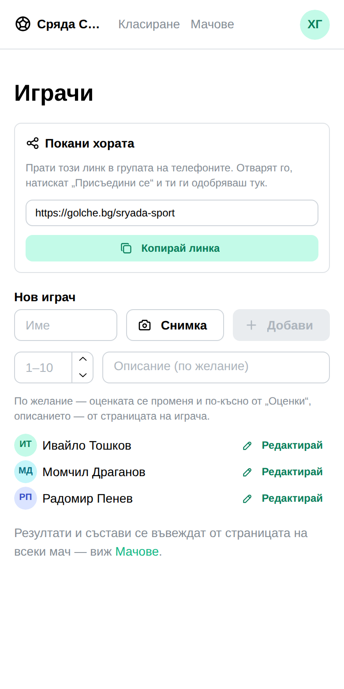
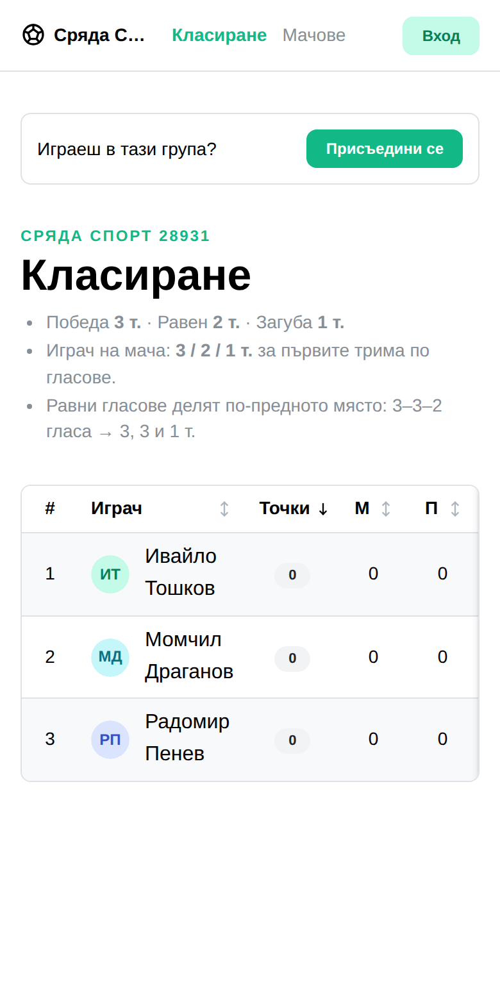
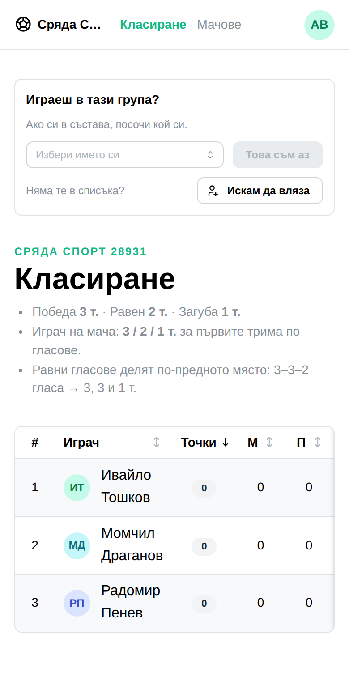
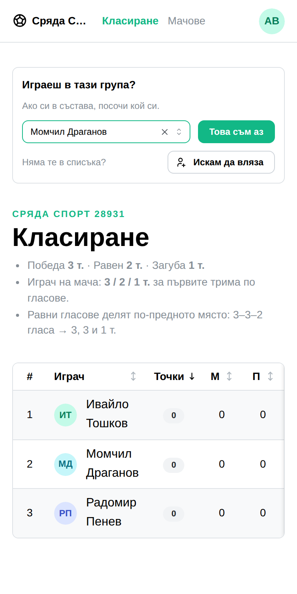
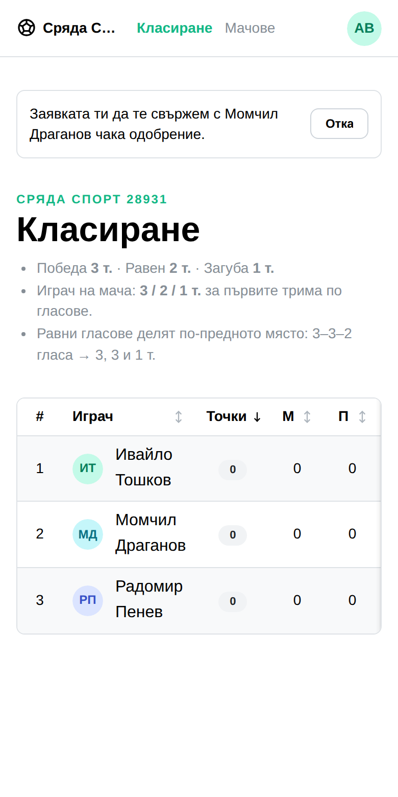
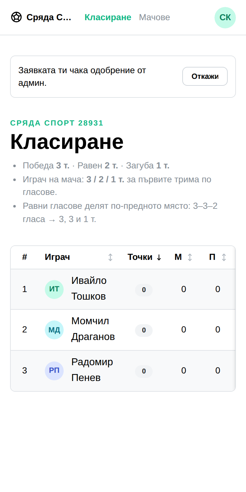
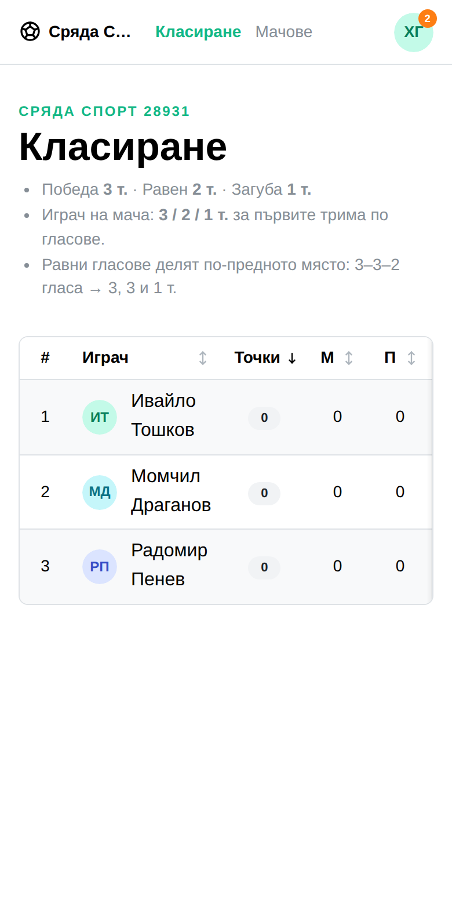
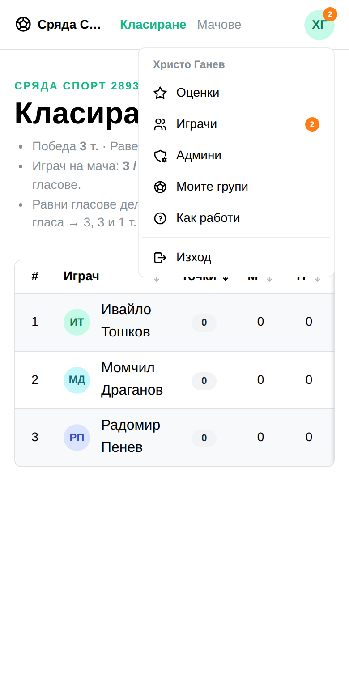
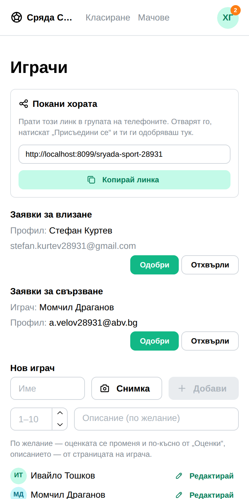
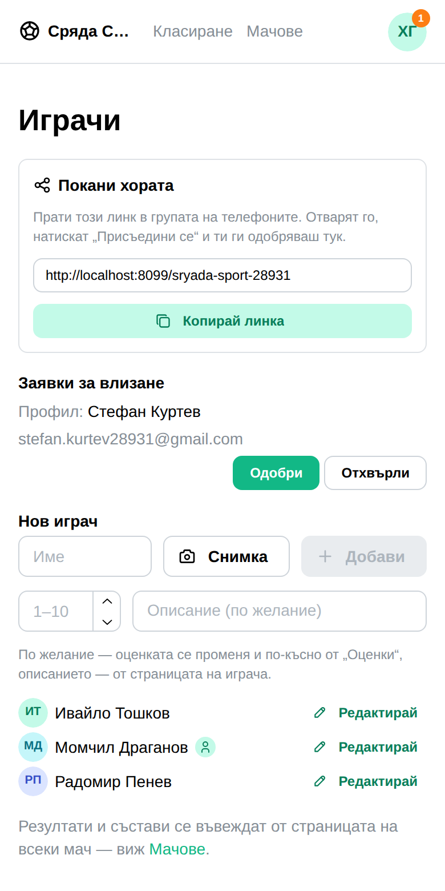

Един линк, пратен в чата. Отварят го, натискат един бутон, админът одобрява. Това е механизмът — няма търсене и няма покани за раздаване.
Всички хора и адреси са измислени. Екраните са истински — снимани в браузър на 390px срещу пълния стек: регистрация, нова лига, състав, заявки, одобрение.
АдминътКопира един линк
От „Играчи“. Линкът е адресът на самата група — нищо не се издава, нищо не изтича, препратен работи, и същият върши работа и другия сезон.
Праща го в чата, който отборът вече има. Това е целият механизъм.

Стъпка 1Отварят линка
Ако човекът не е влязъл в профила си, екранът му го казва — един бутон, „Присъедини се“, който минава през вход и го връща обратно тук.

Стъпка 2Казват кой са
Ако вече са в състава — под име, което админът е написал — посочват кое са. Ако ги няма — просто искат да влязат и групата ще им направи ред.
Човекът знае кой е; админът не знае. Затова питаме него — и затова при одобрението няма какво да се попълва.


Стъпка 3Чакат
Заявката не дава нищо, докато някой не я одобри. Който е посочил себе си, вижда името обратно — за да провери, че е избрал правилния. И двете се оттеглят.


Стъпка 4Админът разбира
Оранжево число върху аватара — едно за двата вида заявки. Няма го, когато няма работа. В менюто същото число стои до „Играчи“, за да се знае накъде.


Стъпка 5Отсъжда
Двете опашки една под друга, на „Играчи“. Заявки за влизане носят само профил — няма играч, защото човекът е казал, че не е в състава. Заявки за свързване носят играч и профил на отделни редове.
Едни и същи два бутона на двата вида: Одобри и Отхвърли. Няма какво да се попълва.


Какво намерих и оправих при прегледа
Невлязъл човек не виждаше нищо на страницата на групата — задънена улица точно за този, който току-що я е намерил. Сега му се казва и се връща обратно след влизане.
Търсенето и списъкът с групи отпаднаха изцяло. Линкът върши същото по-директно, а глобалният списък публикуваше имената на всички групи без полза. Махнати са страницата, ендпойнтът, моделът, резервираният адрес и тестовете им.
Числото нямаше накъде да води. Сега стои и до „Играчи“ в менюто.
Полето при одобрението беше излишно — питаше админа нещо, което човекът вече е казал. Махнато: само одобри или отхвърли.
Двете опашки говореха различно — „Приеми/Откажи“ до „Одобри/Отхвърли“. Сега са едни и същи думи.
Редовете криеха имейла при 390px („a.v…“). Двата реда вече се събират.
Значката с числото беше избутала менюто на профила извън екрана при 375px. Тя мина върху аватара; „Админ“ се скрива на телефон, за да има място.
Какво съзнателно не е там
Отделно „член“, който не е играч. Влизането значи място в състава — иначе човекът няма какво да прави.
Публичен списък с групите. Пробван и махнат: линкът го замества, а списъкът правеше имената на всички групи публично изброими.
Имейл или известие. Числото е на екрана; нищо не се изпраща.
Избор на играч при одобрението. Човекът вече го е посочил сам.
Какво бих отбелязал на ревю
Линкът в снимката е пренаписан. Снимката е от локален стек и адресът щеше да е localhost — в ръководство това е лъжа за това, което човек ще види. Пренаписан е само текстът в полето; контролата, копието и подредбата са истинските.
Ако някой сбърка входа — вече е в състава, но натисне „Искам да вляза“ — одобрението прави втори негов ред. Оправя се: триеш излишния и свързваш профила от редактора.
„Админ“ вече не се вижда на телефон. Заменя се от менюто до него, но е загуба и си е загуба.
Падащото меню показва целия състав, включително вече свързани хора. Сървърът отказва, но човекът научава, че въпросният играч има профил. Същото важеше и досега на страницата на мача.